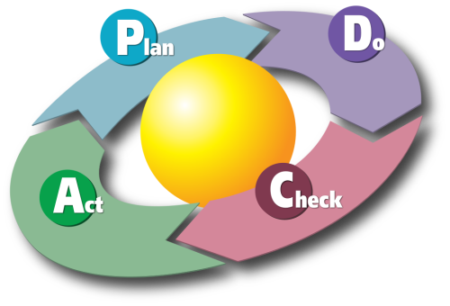
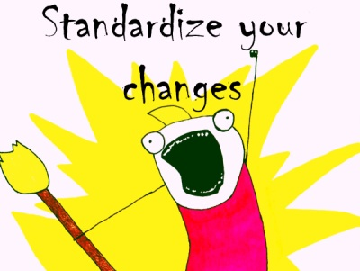

How to reconcile ITIL and DevOps
Sylvain Révéreault
I'm an Ops
- GNU/Linux administrator
- System integration
- Consultant & trainer (Cloud, DevOps)
- DevOps enthusiast
"The" question:
But we already "are" ITIL, isn't DevOps incompatible?
(And why would we need DevOps if we already are ITIL?)
Client's IT manager
The (lost ?) goals of ITIL
ITIL (...) is a set of practices for IT service management (ITSM) that focuses on aligning IT services with the needs of business.
The (lost ?) goals of ITIL
ITIL describes processes, procedures, tasks, and checklists (...) for establishing integration with the organization's strategy, delivering value, (...)
It allows the organization to establish a baseline from which it can plan, implement, and measure.
Sounds familiar?
- Aligning IT with business
- Delivering value
- Plan, implement and measure
Image Source: Wikimedia Commons
The ITIL lifecylce

Image Source: Unknown
Service Strategy
- Strategy Management: focuses on serving customers... a good place to think about metrics
- Demand Management: understand and anticipate customer demand, input for capacity management
Value = Utility + Warranty
Service Design
- Capacity, availability, security: dealing with Ops needs in the design phase
- Architecture Management: use it to align software architecture and system architecture
Service Transition
- Service Validation and Testing: functional & technical testing, a nice place for automation
- Knowledge Management: share, share, share
Service Transition: Change Management
When the wind of change blows, some people build walls, others build windmills.
Ancient Chinese Proverb
Change Management defines 3 types of change:
- Emergency change: a specific workflow, mainly for urgent bug corrections and security patches
- Standard change: a recurrent, well known, relatively risk-free change
- Normal change: everything else (this is an heavy process, with formal request for change, change advisory board, ...
Change standardization is the key
This is what makes you a windwill builder
Image Source: Wikimedia Commons
Use automation and reproducibility to achieve this standardization
Service Operation
- Event & Incident management: think "metrics", embrace Dev & Ops cooperation
- Problem Management: must be carried by both Ops & Devs
Ticketing tools should be used for traceability, not to replace communication!
Continual Service Improvement
Image Source: http://en.wikipedia.org/wiki/PDCA
Conclusion
A "static" ITIL implementation is probably a wrong ITIL implementation
Fast moving business implies Fast moving ITIL.
ITIL needs DevOps: end to end agility, production ready applications
Conclusion
ITIL is DevOps compatible, you "just" need to apply the DevOps principles
Don't mistake ticketing tools for communication tools
Image Source: Know Your Meme
Conclusion
Culture is hard, start with behavior...
Kris Buytaert, Patrick Debois
CAMS => SMAC
Conclusion
- Share: involve Dev & Ops in every process
- Metrics: use them to answer ITIL traceabilty requirements
- Automation: use whenever possible, especially to standardize your changes
- Culture: rely on ITIL's service oriented culture, improve with all of the above